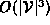
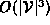

Data Structures and Algorithms
with Object-Oriented Design Patterns in Java
Data Structures and Algorithms
with Object-Oriented Design Patterns in Java
A traversal of a directed graph (either depth-first or breadth-first)
starting from a given vertex
will only visit all the vertices of an undirected graph
if there is a path from the start vertex to every other vertex.
Therefore,
a simple way to test whether a directed graph is strongly connected
uses  traversals--one starting from each vertex in
traversals--one starting from each vertex in  .
Each time the number of vertices visited is counted.
The graph is strongly connected if all the vertices are visited
in each traversal.
.
Each time the number of vertices visited is counted.
The graph is strongly connected if all the vertices are visited
in each traversal.
Program  shows how this can be implemented.
It shows the isStronglyConnected method of the AbstractGraph
class which returns the boolean value true if the graph
is strongly connected.
shows how this can be implemented.
It shows the isStronglyConnected method of the AbstractGraph
class which returns the boolean value true if the graph
is strongly connected.

Program: AbstractGraph class isConnected method.
The method consists of a loop over all the vertices of the graph.
Each iteration does a depthFirstTraversal using
a visitor that counts the number of vertices it visits.
The running time for one iteration
is essentially that of the depthFirstTraversal
since  for the counting visitor.
Therefore, the worst-case running time for the isConnected method
is  when adjacency matrices are used
and
when adjacency lists are used to represent the graph.
for the counting visitor.
Therefore, the worst-case running time for the isConnected method
is  when adjacency matrices are used
and
when adjacency lists are used to represent the graph.
 Copyright © 1998 by Bruno R. Preiss, P.Eng. All rights reserved.
Copyright © 1998 by Bruno R. Preiss, P.Eng. All rights reserved.